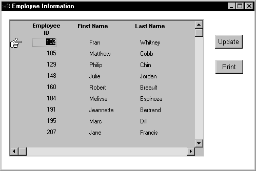
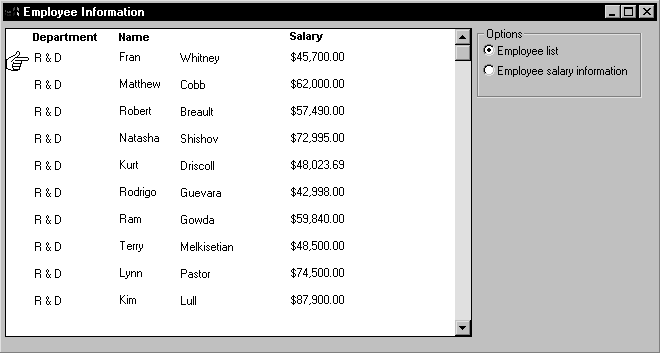
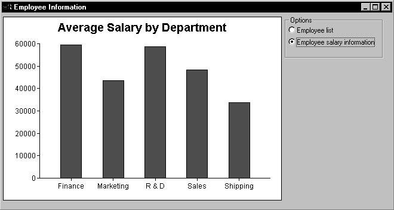

The ShareData method allows you to share a result set among two different DataStores or DataWindow controls. When you share information, you remove the need to retrieve the same data multiple times.
The ShareData method shares data retrieved by one DataWindow control or DataStore (called the primary DataWindow) with another DataWindow control or DataStore (the secondary DataWindow).
When you share data, the result set descriptions for the DataWindow objects must be the same. However, the SELECT statements can be different. For example, you could use the ShareData method to share data between DataWindow objects that have the following SELECT statements (because the result set descriptions are the same):
SELECT dept_id from dept
SELECT dept_id from dept where dept_id = 200
SELECT dept_id from employee
You can also share data between two DataWindow objects where the source of one is a database and the source of the other is external. As long as the lists of columns and their datatypes match, you can share the data.
When you use the ShareData method, the following information is shared:
ShareData does not share the formatting characteristics of the DataWindow objects. That means you can use ShareData to apply different presentations to the same result set.
If you perform an operation that affects the result set for either the primary or the secondary DataWindow, the change affects both of the objects sharing the data. Operations that alter the buffers or the sort order of the secondary DataWindows are rerouted to the primary DataWindow. For example, if you call the Update method for the secondary DataWindow, the update operation is applied to the primary DataWindow also.
To turn off the sharing of data, you use the ShareDataOff method. When you call ShareDataOff for a primary DataWindow, any secondary DataWindows are disassociated and no longer contain data. When you call ShareDataOff for a secondary DataWindow, that DataWindow no longer contains data, but the primary DataWindow and other secondary DataWindows are not affected.
In most cases you do not need to turn off sharing, because the sharing of data is turned off automatically when a window is closed and any DataWindow controls (or DataStores) associated with the window are destroyed.
You cannot share data with a DataWindow object that has the Crosstab presentation style.
Suppose you have a window called w_employees that allows users to retrieve, update, and print employee data retrieved from the database:

The DataWindow object displayed in the DataWindow control is suitable for online display but not for printing. In this case, you could define a second DataWindow object for printing that has the same result set description as the object used for display and assign the second object to a DataStore. You could then share data between the DataStore and the DataWindow control. Whenever the user asked to print the data in the window, you could print the contents of the DataStore.
The code you write begins by establishing the hand pointer as the current row indicator for the dw_employees DataWindow control. Then the script sets the transaction object for dw_employees and issues a Retrieve method to retrieve some data. After retrieving data, the script creates a DataStore using the instance variable or data member ids_datastore, and assigns the DataWindow object d_employees to the DataStore. The final statement of the script shares the result set for the dw_employees DataWindow control with the DataStore.
This code is for the window's Open event:
dw_employees.SetRowFocusIndicator(Hand!)
dw_employees.SetTransObject(SQLCA)
dw_employees.Retrieve()
ids_datastore = CREATE datastore
ids_datastore.DataObject = "d_employees"
dw_employees.ShareData(ids_datastore)
Code for the cb_update button applies the update operation to the dw_employees DataWindow control.
This code is for the Update button's Clicked event:
IF dw_employees.Update() = 1 THEN
COMMIT using SQLCA;
MessageBox("Save","Save succeeded")ELSE
ROLLBACK using SQLCA;
MessageBox("Save","Save failed")END IF
The Clicked event of the cb_print button prints the contents of ids_datastore. Because the DataWindow object for the DataStore is d_employees, the printed output uses the presentation specified for this object.
This code is for the Print button's Clicked event:
ids_datastore.Print()
When the window closes, the DataStore gets destroyed.
This code is for the window's Close event:
destroy ids_datastore
Suppose you have a window called w_multi_view that shows multiple views of the same result set. When the Employee List radio button is selected, the window shows a list of employees retrieved from the database:

When the Employee Salary Information radio button is selected, the window displays a graph that shows employee salary information by department:

This window has one DataWindow control called dw_display. It uses two DataStores to process data retrieved from the database. The first DataStore (ids_emp_list) shares its result set with the second DataStore (ids_emp_graph). The DataWindow objects associated with the two DataStores have the same result set description.
When the window or form opens, the application sets the mouse pointer to the hourglass shape. Then the code creates the two DataStores and sets the DataWindow objects for the DataStores. Next the code sets the transaction object for ids_emp_list and issues a Retrieve method to retrieve some data.
After retrieving data, the code shares the result set for ids_emp_list with ids_emp_graph. The final statement triggers the Clicked event for the Employee List radio button.
This code is for the window's Open event:
SetPointer(HourGlass!)
ids_emp_list = Create DataStore
ids_emp_graph = Create DataStore
ids_emp_list.DataObject = "d_emp_list"
ids_emp_graph.DataObject = "d_emp_graph"
ids_emp_list.SetTransObject(sqlca)
ids_emp_list.Retrieve()
ids_emp_list.ShareData(ids_emp_graph)
rb_emp_list.EVENT Clicked()
The code for the Employee List radio button (called rb_emp_list) sets the DataWindow object for the DataWindow control to be the same as the DataWindow object for ids_emp_list. Then the script displays the data by sharing the result set for the ids_emp_list DataStore with the DataWindow control.
This code is for the Employee List radio button's Clicked event:
dw_display.DataObject = ids_emp_list.DataObject
ids_emp_list.ShareData(dw_display)
The code for the Employee Salary Information radio button (called rb_graph) is similar to the code for the List radio button. It sets the DataWindow object for the DataWindow control to be the same as the DataWindow object for ids_emp_graph. Then it displays the data by sharing the result set for the ids_emp_graph DataStore with the DataWindow control.
This code is for the Employee Salary Information radio button's Clicked event:
dw_display.DataObject = ids_emp_graph.DataObject
ids_emp_graph.ShareData(dw_display)
When the window closes, the DataStores get destroyed.
This code is for the window's Close event:
Destroy ids_emp_list
Destroy ids_emp_graph
 Use garbage collection Do not destroy the objects if they might still be in use by
another process—rely on garbage collection instead.
Use garbage collection Do not destroy the objects if they might still be in use by
another process—rely on garbage collection instead.